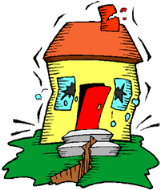
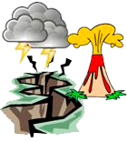

Una amenaza es un fenómeno o proceso natural o causado por el ser
humano que puede poner en peligro a un grupo de personas, sus
cosas y su ambiente, cuando no son precavidos.
Existen diferentes tipos de amenazas. Algunas son naturales,
otras son provocadas por el ser humano, como las llamadas
industriales o tecnológicas (explosiones, incendios y derrames de
sustancias tóxicas). Las guerras y el terrorismo también son
amenazas creadas por el ser humano.
Tomado de: Aprendamos a Prevenir los desastres. EIRD-UNICEF.
Un desastre es cualquier hecho producido por la naturaleza
o la acción del hombre que a su paso puede provocar pérdidas humanas; destruir edificios, casas, hospitales
y escuelas; arruinar cultivos; dañar vías de comunicación
y originar cambios en el ambiente, excediendo la capacidad de respuesta de la comunidad afectada.
Entre los desastres naturales se encuentran las inundaciones, huracanes,
derrumbes, deslizamientos, terremotos
y maremotos; mientras que los antrópicos o generados
por la actividad humana abarcan incendios, accidentes
aéreos, derrames petroleros y daños por sustancias químicas o materiales peligrosos.
Tomado de: Pevención y Mitigación de Desastres. UNICEF Venezuela, 2005.
La emergencia es un evento repentino que hace tomar las medidas inmediatas para
reducir sus efectos. La diferencia con el desastre
está en las consecuencias y en la capacidad de respuesta de la comunidad para enfrentarlas y
manejar sus efectos, haciendo uso de las propias aptitudes.
Tomado de: Pevención y Mitigación de Desastres. UNICEF Venezuela, 2005.
Las inundaciones son la presencia de grandes cantidades de agua en general
provocadas por fuertes lluvias y que el suelo no puede absorber.
Hay dos (2) tipos de inundaciones:
Inundaciones súbitas o repentinas: Se producen generalmente en
cuencas hidrográficas de fuertes pendientes. Son causadas por intensas lluvias, tormentas o
huracanes. Pueden desarrollarse en minutos u horas, según la intensidad y la duración de la lluvia,
la topografía, las condiciones del suelo y la cobertura vegetal.
Inundaciones lentas o progresivas: Se producen sobre terrenos planos que
desaguan muy lentamente y cercanos a las riberas de los ríos o donde las lluvias
son frecuentes o torrenciales. Muchas de ellas son parte del comportamiento
normal de los ríos, es decir, de su régimen de aguas, ya que es habitual
que en invierno aumente la cantidad de agua e inunde los terrenos cercanos a la orilla.
Tomado de: Aprendamos a Prevenir los desastres. EIRD-UNICEF.
Inundaciones. Preparados para actuar. División de Educación. Banco Interamericano de Desarrollo (BID), 2012
 La emergencia es un evento repentino que hace tomar las medidas inmediatas para
reducir sus efectos. La diferencia con el desastre
está en las consecuencias y en la capacidad de respuesta de la comunidad para enfrentarlas y
manejar sus efectos, haciendo uso de las propias aptitudes.
La emergencia es un evento repentino que hace tomar las medidas inmediatas para
reducir sus efectos. La diferencia con el desastre
está en las consecuencias y en la capacidad de respuesta de la comunidad para enfrentarlas y
manejar sus efectos, haciendo uso de las propias aptitudes.